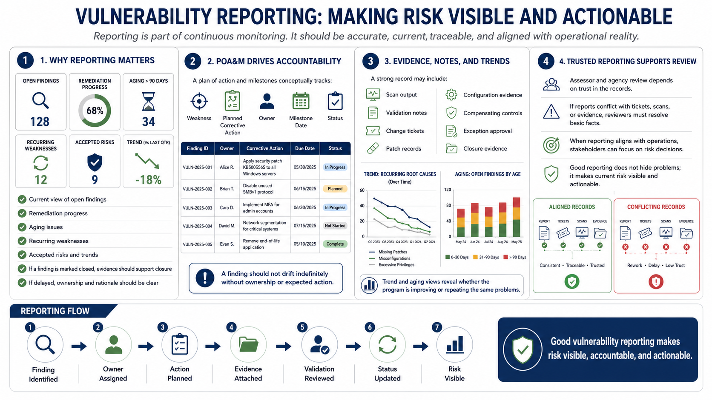

Reporting, POA&Ms, and Evidence
Connecting to LMS... Progress: in progress

Narration
Vulnerability reporting is part of continuous monitoring. It gives stakeholders a current view of open findings, remediation progress, aging issues, recurring weaknesses, accepted risks, and trends. Reporting should be accurate, current, traceable, and consistent with operational reality. If the report says a finding is closed, the evidence should support closure. If a finding is delayed, ownership and rationale should be clear.
A plan of action and milestones, conceptually, helps track weaknesses, planned corrective actions, owners, milestones, and status. The important idea is accountability. A vulnerability should not drift indefinitely because no one knows who owns it, what action is expected, or how progress will be measured. The tracker should connect technical findings to risk management and remediation work.
Evidence attachments and status notes matter. A useful record may include scan output, validation notes, change tickets, patch records, configuration evidence, compensating control details, exception approval, or closure evidence. Trend reporting can show whether the program is improving or whether recurring root causes are producing the same findings. Aging reports can show where delays are accumulating.
Assessor and agency review at a high level depends on trust in the records. If reports conflict with tickets, scans, or evidence, reviewers have to spend time resolving basic facts. If reporting aligns with operations, stakeholders can focus on risk decisions. Good vulnerability reporting does not hide problems. It makes current risk visible and actionable.